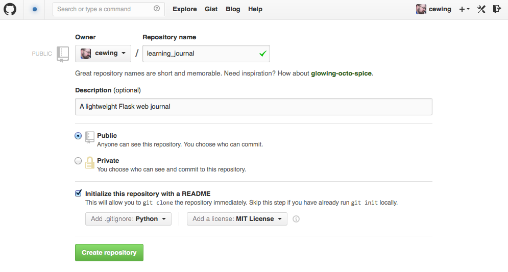

Python Learning Journal: Step 1¶
In this tutorial we will begin the process of creating an online learning journal using Python and the Pyramid web framework.
The walk-through is intended to get you to a working application as quickly as possible. There will be many questions left unanswered as we proceed. Fear not. The answers will come as this course progresses. For now, simply focus on the process and getting to a working application.
Our application will be built using a Model-View-Controller pattern where each component in our design falls into one of those three categories.
Prerequisites¶
In order to follow this tutorial, you will need to have several tools in place before you begin.
- Python 2.7.x
- Virtualenv installed and properly configured
- The PostgreSQL Database Engine installed and properly configured
- A c compiler and Python development headers
- An account with GitHub
- An account with Heroku (and the heroku toolbelt installed)
Create Your Environment¶
If all the pieces are in place, you are ready to proceed to the next level.
Set Up the Project Environment¶
Since you’ve installed and configured virtualenv and properly, this step is simple.
Open a command shell and type the following:
$ mkproject learning-journal
You should see output that looks like this (though your prompt and path names will look different):
192:~ cewing$ mkproject learning-journal
New python executable in learning-journal/bin/python
Installing setuptools, pip...done.
Creating /Users/cewing/projects/learning-journal
Setting project for learning-journal to /Users/cewing/projects/learning-journal
[learning-journal]
192:learning-journal cewing$
This command will do a couple of things for you:
- create a new Python virtual environment called
learning-journalin your configured$WORKON_HOME - install
pipandsetuptoolsin the new environment - activate the new environment
- create a new project directory called
learning-journalin your configured$PROJECT_HOME - change your current working directory to the new project directory
Now you have a clean and isolated environment in which to do your work.
Create a GitHub Project Repository¶
Note
If you’ve already created a learning-journal repository for your
learning journal mockup assignment, you can use that repository instead of
creating a new one. Skip to
Clone Your Repository
Open a web browser and go to GitHub. If you are not logged in, do so.
At the top left, find the small + icon next to your name and click it.
Select New Repository from the drop-down menu.
A form will load, allowing you to enter some information about your new repository.
{kind=link}
Enter the following values:
- Repository Name:
learning-journal- Description:
- A lightweight Pyramid web journal.
Leave the new repository as Public
Check the box for initializing the repository with a README.
Select a Python .gitignore file from the first drop-down at the bottom.
Choose a reasonable license from the second drop-down (I used MIT).
Finally, click the Create Repository button.
Clone Your Repository¶
Now that you have a repository for the application you will be writing, you’ll want to get a copy of that code to your local machine.
On GitHub, while looking at your newly created repository, find the URL for
cloning your repository at the bottom of the menu on the right-hand side of the
page.

There are two versions of this URL, one for HTTPS and the other for SSH.
If you have set up public key authentication for your GitHub account (and you really, really should), you will want to copy the SSH version of the URL. Otherwise, you’ll need to copy the HTTPS version.
Back in your terminal, make sure you are in your learning-journal project
directory:
192:learning-journal cewing$ pwd
/Users/cewing/projects/learning-journal
[learning-journal]
192:learning-journal cewing$
Then, use the git clone command to make a local copy of your new repository
(do not forget the final ./):
[learning-journal]
192:learning-journal cewing$ git clone <paste-your-copied-github-url-here> ./
Once that is complete, you should have the contents of your github
learning-journal repository inside the directory you created earlier. Your
filesystem should look something like this:
[learning-journal]
heffalump:learning-journal cewing$ tree -a -I .git .
.
├── .gitignore
├── LICENSE
└── README.md
Note
If you’ve already created content in your repository for your learning
journal mockup, you should also see that content in a mockups folder:
.
├── .gitignore
├── LICENSE
├── README.md
└── mockups
├── create.html
├── detail.html
├── edit.html
└── index.html
Create a Branch for Today’s Work¶
We want to maintain a clean master branch in our repository. Any work you
do on adding features to a project should be done on a branch, evaluated and
tested there, and only merged to master once the work is complete.
To create a branch called step1 for todays work, follow these steps:
[learning-journal]
[master=]
192:learning-journal cewing$ git branch
* master
[learning-journal]
[master=]
192:learning-journal cewing$ git checkout -b step1
Switched to a new branch 'step1'
[learning-journal]
[step1]
192:learning-journal cewing$ git branch
master
* step1
You have created and checked out a new branch called step1. You’ll do your
day’s work here.
This new branch exists only on your local machine. When you finish today’s assignment you’ll need to push this branch up to your GitHub repository. More on that later.
Install Required Software¶
Before we begin, we’ll need to install some Python packages to get the tools we’ll need to complete our project.
Make sure that your learning-journal virtual environment is active, and
that the pip command points to that environment (note the
learning-journal in the pathname below):
[learning-journal]
192:learning-journal cewing$ which pip
/Users/cewing/virtualenvs/learning-journal/bin/pip
Using the pip command, install the required software as follows:
[learning-journal]
192:learning-journal cewing$ pip install pyramid psycopg2 waitress sqlalchemy zope.sqlalchemy pyramid-tm
Downloading/unpacking pyramid
...
Successfully installed pyramid psycopg2 zope.interface translationstring PasteDeploy WebOb repoze.lru zope.deprecation venusian waitress
Cleaning up...
Warning
If you are using Mac OS X you may see an error when installing Python code with
C extensions (like psycopg2):
clang: error: unknown argument: '-mno-fused-madd' [-Wunused-command-line-argument-hard-error-in-future]
If you see this, you may need to follow the instructions here due to a issue in how the OS X command-line c compiler is configured.
Preserve Your Installed Dependencies¶
In order to make it easier to work with others, you want to create a record of
the additional packages you’ve installed. You’ll use pip to do that:
[learning-journal]
[step1]
192:learning-journal cewing$ pip freeze > requirements.txt
Add that new file to your repository on this branch and commit the changes locally:
[learning-journal]
[step1]
192:learning-journal cewing$ git add requirements.txt
[learning-journal]
[step1]
192:learning-journal cewing$ git commit -m "add a requirements file"
[learning-journal]
[step1]
192:learning-journal cewing$ git status
On branch step1
nothing to commit, working directory clean
After creating this new file, you’re file system layout should look like this:
.
├── .gitignore
├── LICENSE
├── README.md
└── requirements.txt
Create a Database¶
Finally, in order to preserve the journal entries you’ll write throughout the
class, you’ll need to have a database. You can use the createdb command
provided by PostgreSQL to accomplish this task. For development purposes it
is fine for you to own the database yourself.
Make sure that your database engine is running and then issue the following command:
[learning-journal]
[step1]
192:projects cewing$ createdb learning-journal
Building the Data Layer¶
You’ll start your learning journal by building the data layer. This layer of the application will be responsible for persisting entries to and retrieving entries from the database you just created.
First, though, you’ll set up a simple working Pyramid application so you can see something happen when you deploy later in the tutorial.
The App Skeleton¶
We’ll need to set up a basic Pyramid app skeleton to work from. Most Pyramid tutorials you’ll see start by creating the app skeleton from a scaffold. We are going to build our first one by hand. This will allow us to keep it nice and simple.
In the root of your repository, create a file called journal.py, and add
the following:
1 2 3 4 5 6 7 8 9 10 11 12 13 14 15 16 17 18 19 20 21 22 23 24 25 26 27 28 29 30 31 32 33 | # -*- coding: utf-8 -*-
from __future__ import unicode_literals
import os
from pyramid.config import Configurator
from pyramid.view import view_config
from waitress import serve
@view_config(route_name='home', renderer='string')
def home(request):
return "Hello World"
def main():
"""Create a configured wsgi app"""
settings = {}
debug = os.environ.get('DEBUG', True)
settings['reload_all'] = debug
settings['debug_all'] = debug
# configuration setup
config = Configurator(
settings=settings
)
config.add_route('home', '/')
config.scan()
app = config.make_wsgi_app()
return app
if __name__ == '__main__':
app = main()
port = os.environ.get('PORT', 5000)
serve(app, host='0.0.0.0', port=port)
|
- Lines 1-6:
- import the required parts to make this all work.
- Lines 9-11:
- configure a simple home page view (more about this tomorrow)
- Lines 14-27:
- create a factory function that will build and return a basic application
- Lines 30-33:
- make
journal.pya Python script that uses your factory to build an app and then serves it.
At this point, you actually have a functional Pyramid app. In your terminal, with the virtualenv active, type the following:
[learning-journal]
[step1]
Banks:learning-journal cewing$ python journal.py
serving on http://0.0.0.0:5000
Fire up a browser, and you should be able to see “Hello World” when you load
the url http://localhost:5000. You’ll fix this to look more interesting
tomorrow, but for now, bask in the glory of working code! Then quit the server
with ctrl-C to get back to a command prompt.
The entries Table¶
Your application is going to be a journal where you can write daily entries about the things you learn here at Code Fellows. So what should one of these entries look like? Let’s keep it simple for now. Each entry should have a title, some text, and a value indicating the date and time it was created. Perhaps an SQL schema definition for such an entry might look like this:
CREATE TABLE IF NOT EXISTS entries (
id serial PRIMARY KEY,
title VARCHAR (128) NOT NULL,
text TEXT NOT NULL,
created TIMESTAMP NOT NULL
)
This defines a single database table called entries that has four columns.
There will be a primary key, a title and some text, and a created column
that will hold a timestamp.
As you learned in your readings and in class, you can create a database table
like this and then address it using the psycopg2 library directly. That
works fine, but a more common pattern is to use an ORM (or Object-Relational
Mapper) to handle communications between your Python code and your database.
Using an ORM allows you define your database tables in terms of Python classes.
Creating instances of these classes and saving them writes records into the
database, and retrieving those records from the database gives you Python
object instances. These classes are generally called Models.
In order to work with an ORM a bit of configuration is required. You’ll need to update your app skeleton to provide the infrastructure a model needs to work properly.
In the imports at the top of your journal.py file, add the following
imports:
import sqlalchemy as sa
from sqlalchemy.ext.declarative import declarative_base
Then, just below the imports, set up a base class from which your model will inherit. Remember, this base class provides the wiring that connects your model to the database. It’s very important.
Base = declarative_base()
In class you created a very simple ORM model. See if you can repeat the
exercise for your journal entry model. Add the class definition just below the
Base class you created above. Call the model class Entry. Remember the
important requirements of this class:
- Your model must inherit from the
Baseclass you just created. - Each persistent attribute of your entry (the bits you want to save) should be
an instance of the
sa.Columnclass. - The database table for your entry should be called
entries.
Try to create this class on your own. If you find after 20-30 minutes that you are struggling, and you’ve tried looking up examples in the documentation, take a peek at my solution below.
Peek At A SolutionNow you have a Python class that represents a journal entry. Because it is an
ORM model, it will be able to persist itself into a database, and you’ll be
able to retrieve it later to read or edit.
Before you move on, add your changes to git and commit them with a good message about what you’ve done.
Initializing the DB¶
There’s still a missing ingredient here. You’ve created a database, but you
haven’t actually set up the entries table in that database. You’ll want to
set up some code that will do this for you. Next, add a function that will
create the database table that belongs to this new model you created.
Do you remember how you did that in class? You used the .create_all()
method of the declarative_base class that was the parent class of the model
you wrote. You had to pass a connection to the database in to that function as
the engine parameter. Your job is to write a function that can accomplish
the same goal. Call the function init_db and you’ll place it just below
your Entry model definition in journal.py.
Review the SQLAlchemy ORM Tutorial and see if you can figure out how to write
this function on your own. One clue. In the tutorial, you used the
create_engine method to make that connection. If you can’t come up with
the right code within about 20-30 minutes, go ahead and take a peek at my
solution below.
Once you’ve got this method written, you can actually go ahead and create the table in real life.
Start by firing up a postgresql connection in a new terminal window:
$ psql -U <username> learning-journal
If you need a password, postgresql will prompt you for one. Once connected,
list the tables in your database with the \d command:
learning-journal=# \d
No relations found.
You should see that there are no relations (postgresql’s fancy work for table-like constructs). That’s expected, since you haven’t run your function yet.
Back in your terminal where the learning-journal virtualenv is active, start up python, import your new function and run it:
>>> from journal import init_db
>>> init_db()
Then return to your postgresql terminal and try listing the tables again:
learning-journal=# \d
List of relations
Schema | Name | Type | Owner
--------+----------------+----------+--------
public | entries | table | cewing
public | entries_id_seq | sequence | cewing
(2 rows)
Keen!
You can provide a table name argument to that command to see the information
about the entries table
learning-journal=# \d entries
Table "public.entries"
Column | Type | Modifiers
---------+-----------------------------+------------------------------------------------------
id | integer | not null default nextval('entries_id_seq'::regclass)
title | character varying(127) | not null
text | text | not null
created | timestamp without time zone | not null
Indexes:
"entries_pkey" PRIMARY KEY, btree (id)
If your results look more-or-less like this, then you’ve succeeded. Now it is time to connect this app to Heroku.
Before you move along, make sure you’ve added these changes to git and committed them. Write a good message about what you’ve changed.
App Deployment¶
You are going to put your learning journal online using Heroku, a service that simplifies deploying web applications in a number of languages.
Moving on from here assumes that you have already created a Heroku account, downloaded and installed the toolbelt, and successfully logged in to Heroku from your command line. If that is not the case. Please follow this tutorial to get up to speed. You only need to do the first two steps (Introduction and Set up)
Add a Procfile¶
Heroku uses a standard file to control how your app is built and served. This
file must be named Procfile (and capitalization counts). Go ahead and
create a new file by that name in your journal repository root.
Now your filesystem should look like this:
learning-journal
└── learning-journal
├── .gitignore
├── LICENSE
├── Procfile
├── README.md
├── journal.py
└── requirements.txt
In your new Procfile, type the following line of code:
web: python journal.py
This tells heroku that you will be running a web service and that the
service will be provided by executing the python journal.py.
Once you’ve got that created, you should be able to use foreman, provided
by the Heroku Toolbelt, to start up your application:
[learning-journal]
[step1]
192:learning-journal cewing$ foreman start
23:26:33 web.1 | started with pid 68019
With that process running in your terminal, start up your web browser and load
http://127.0.0.1:5000. You should be able to see this:

If you do, then your Procfile is correct, and you are ready to go.
Before you move on, add your changes to git and commit them. Include a good message about what you’ve changed.
Submit a Pull Request¶
For the class submission process, you will use GitHub pull requests. This allows your instructors and TAs to easily find the work you did for any given assignment.
Before you can make a pull request, you must first push the branch you created
for this assignment up to GitHub. In your terminal, from inside your
learning-journal repository, take the following steps:
[learning-journal]
[step1]
192:learning-journal cewing$ git push -u origin step1
Counting objects: 32, done.
Delta compression using up to 8 threads.
Compressing objects: 100% (23/23), done.
Writing objects: 100% (23/23), 3.41 KiB | 0 bytes/s, done.
Total 23 (delta 14), reused 0 (delta 0)
To git@github.com:cewing/learning-journal.git
* [new branch] step1 -> step1
Branch step1 set up to track remote branch step1 from origin.
[learning-journal]
[step1=]
192:learning-journal cewing$
Now, open a web browser and point it at your learning-journal repository in
GitHub.
On the right side of the homepage, find the Pull Requests menu item and click it.

The page that opens should have a big green button for creating a new pull request. Click it.

Next, in the page that opens, choose your master branch as the base and
your step1 branch to compare (You may have to click an edit button in
the grey area to be able to change what is automatically selected).

When you have the right values selected, go ahead and click the big green button to create your pull request.
Copy the URL for that pull request and use it to submit this assignment in Canvas.
Merge to Master¶
Heroku prefers you to deploy from your master branch. That makes sense.
It’s in keeping with standard gitflow to have master be the deployable
branch in your repository.
You’ve been doing your work on a branch, step1. Now that you are ready to
deploy, it’s time to merge that work.
Make sure that you’ve committed and pushed all your work to-date before you take this next set of actions.
When all is squared away, in your terminal, type the following:
[learning-journal]
[step1=]
192:learning-journal cewing$ git checkout master
Switched to branch 'master'
Your branch is up-to-date with 'origin/master'.
[learning-journal]
[master=]
192:learning-journal cewing$ git merge step1
Adding journal.py
Adding Procfile
[master 179e695] Merge branch 'step1'
192:learning-journal cewing$ git status
On branch master
Your branch is ahead of 'origin/master' by 7 commits.
(use "git push" to publish your local commits)
nothing to commit, working directory clean
[learning-journal]
[master>]
192:learning-journal cewing$ git push origin master
Counting objects: 7, done.
Delta compression using up to 8 threads.
Compressing objects: 100% (3/3), done.
Writing objects: 100% (3/3), 342 bytes | 0 bytes/s, done.
Total 3 (delta 2), reused 0 (delta 0)
To git@github.com:cewing/learning-journal.git
0774bf1..179e695 master -> master
By merging locally and then pushing, you have just closed the pull request you opened a moment ago. That’s okay. It is still available for viewing and comments, and that was the point of it.
At this point, then you have merged your step1 work back into master
and are ready to deploy your code.
Create a Heroku App¶
The first step in deployment is to create a Heroku app to which you can deploy.
Use the create command from the Heroku toolbelt to accomplish this:
[learning-journal]
[master=]
192:learning-journal cewing$ heroku create
Creating fizzy-fairy-1234... done, stack is cedar
http://fizzy-fairy-1234.herokuapp.com/ | git@heroku.com:fizzy-fairy-1234.git
Git remote heroku added
This accomplishes a few things. First, a special heroku remote is added to
your git repository. You can see this:
[learning-journal]
[master=]
192:learning-journal cewing$ git remote -v
heroku git@heroku.com:fizzy-fairy-1234.git (fetch)
heroku git@heroku.com:fizzy-fairy-1234.git (push)
origin git@github.com:cewing/learning-journal.git (fetch)
origin git@github.com:cewing/learning-journal.git (push)
Notice that the URL for this new remote is the same as the subdomain name Heroku assigned to your app. You can control what this name is, but there’s no real need as you will be pointing your own URL at the app soon enough. The goofy names automatically created are just fine. for now.
Second, a place is created in Heroku’s infrastructure for your application to live. When you push to the heroku remote, your app will be uploaded, built and deployed so that it is visible online.
Before we’re ready to do that, though we have to do one more thing.
Add PostgreSQL to Heroku¶
Heroku provides a number of different options for data stores. In order to use any of them, you’ll need to set them up. Our app is designed to use PostgreSQL, so we need to set up the Heroku add-on that allows us to use that database in deployment. The Heroku toolbelt provides a command for this as well:
[learning-journal]
[master=]
192:learning-journal cewing$ heroku addons:create heroku-postgresql:dev
Creating hippy-trippy-1234... done, (free)
Adding hippy-trippy-1234 to fizzy-fairy-1234... done
Setting DATABASE_URL and restarting fizzy-fairy-1234... done, v3
Database has been created and is available
! This database is empty. If upgrading, you can transfer
! data from another database with pgbackups:restore
Use `heroku addons:docs heroku-postgresql` to view documentation.
Now your app on Heroku is set up to use a PostgreSQL database. A URL has been
created for you to connect to. You can see the toolbelt setting
DATABASE_URL for you. Your app expects this DATABASE_URL to exist in
your environment. You can run heroku config to see the values that are set
in the environment for your heroku app:
[learning-journal]
[master=]
Banks:learning-journal cewing$ heroku config
=== fizzy-fairy-1234 Config Vars
DATABASE_URL: postgres://<username>:<pw>@<domain>:<port>/<db_name>
Super. All is well and you are ready to deploy
Deploy to Heroku¶
To deploy, simply use git to push your master branch to the heroku
remote:
[learning-journal]
[master=]
192:learning-journal cewing$ git push heroku master
Initializing repository, done.
Counting objects: 79, done.
Delta compression using up to 8 threads.
Compressing objects: 100% (52/52), done.
Writing objects: 100% (79/79), 11.37 KiB | 0 bytes/s, done.
Total 79 (delta 37), reused 55 (delta 24)
-----> Python app detected
-----> No runtime.txt provided; assuming python-2.7.6.
-----> Preparing Python runtime (python-2.7.6)
-----> Installing Setuptools (2.1)
-----> Installing Pip (1.5.4)
-----> Installing dependencies using Pip (1.5.4)
Downloading/unpacking Flask==0.10.1 (from -r requirements.txt (line 1))
....
Successfully installed Flask Jinja2 MarkupSafe Werkzeug gunicorn itsdangerous psycopg2
Cleaning up...
-----> Discovering process types
Procfile declares types -> web
-----> Compressing... done, 31.5MB
-----> Launching... done, v5
http://fizzy-fairy-1234.herokuapp.com/ deployed to Heroku
To git@heroku.com:fizzy-fairy-1234.git
* [new branch] master -> master
Load up the URL above (the one that was “deployed to Heroku”). You should see your “Hello world!”.
If you do, then hoorah. All that remains is to initialize your database on Heroku.
You can attach to a Python terminal running in your deployed environment using the Heroku toolbelt:
[learning-journal]
[master=]
192:learning-journal cewing$ heroku run python
Running `python` attached to terminal... up, run.8229
Python 2.7.6 (default, Jan 16 2014, 02:39:37)
[GCC 4.4.3] on linux2
Type "help", "copyright", "credits" or "license" for more information.
>>>
From there, it’s just like what you did locally a short while ago:
>>> from journal import init_db
>>> init_db()
>>>
Use the standard ^D to detatch from the terminal.
You may wish to verify that your initialization worked. You can use the
heroku pg command to connect to the database directly with psql:
[learning-journal]
[master=]
heffalump:learning-journal cewing$ heroku pg:psql
---> Connecting to HEROKU_POSTGRESQL_RED_URL (DATABASE_URL)
psql (9.3.2, server 9.3.5)
SSL connection (cipher: DHE-RSA-AES256-SHA, bits: 256)
Type "help" for help.
evening-brushlands-7955::RED=> \d
List of relations
Schema | Name | Type | Owner
--------+----------------+----------+----------------
public | entries | table | kaplujiadphtmg
public | entries_id_seq | sequence | kaplujiadphtmg
(2 rows)
evening-brushlands-7955::RED=> \d entries
Table "public.entries"
Column | Type | Modifiers
---------+-----------------------------+------------------------------------------------------
id | integer | not null default nextval('entries_id_seq'::regclass)
title | character varying(127) | not null
text | text | not null
created | timestamp without time zone | not null
Indexes:
"entries_pkey" PRIMARY KEY, btree (id)
This shows that your database does in fact have the entries table, and the
table is correctly configured. At this point you’re safely done for the day.
Good work!